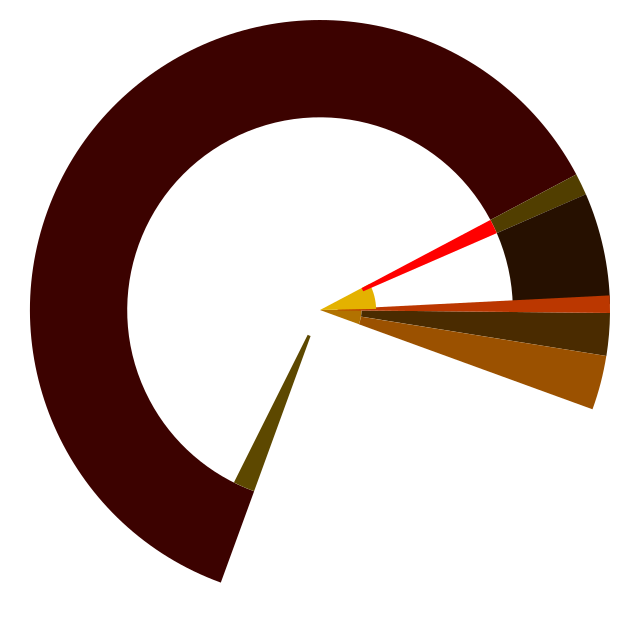

ferros.org
Imagine a device that is dead the moment you say so,
and alive again before you blink.
Imagine nothing about you on it
until you say who you are.
Imagine an operating system
with the inherited assumptions taken out,
until only the operating system is left.
Now stop imagining.
View source.
| Scripts running on this page | 0 |
| Cookies, trackers, fonts fetched | 0 |
| Lines of C in the kernel | 0 |
| Passwords, accounts, phone numbers | 0 |
| Companies between you and your device | 0 |
The first two from this file. The rest from the repository.
<1
Under one second from the bootloader to the deck, from cold, every time.
What runs today
On a Pixel 8 Pro, from a cold boot, with no Linux underneath (and on a Pixel 8a too, all of it but the cameras and satellite positioning, so far):
- Its own kernel, in Rust from the first instruction after four short hand-written entry stubs (the image headers the bootloader parses and the first jumps, with the MMU off and no stack). All drivers run outside the kernel with capabilities.
- A store of its own on the flash. No file system was ported; every write is a commit.
- The display at full resolution, with its own true 16-bit spectral pipeline, no 1931 CIE anywhere. Gradients look real nice! Oh, and touch. You can touch it and it does things.
- The cameras: the camera takes pictures, so that's fun.
- WiFi, cellular data (LTE and 5G), satellite positioning (a fix from the chip's own engine; assisted GPS in the works), the sensors, NFC, Bluetooth and USB, NEVER POTS, calls, SMS, MMS or 911!
- Keys that live in isolated CPU registers and never touch RAM.
- passless identity: you type your handle, and nothing of yours is visible until you do.
- The killswitch: both volume keys, held together, and the power is cut below the software. Nothing polls; the key presses are the interrupt. BOOP!
Android is on the same device, from the same boot image, behind a gate and under a thin hypervisor that ferros owns.
Why?
To stop android from fucking with the device without your permission.
A storage firewall under Android stops it writing the boot chain or ferros's store, whatever it has been told to update.
Running it is your choice, never the default: opt in after you attest, the firewall and the gate on whenever it is installed, and ferros zeroes its own memory before handing over. Apps come to ferros as APKs compiled on the device; Android stays for whoever wants it, unsupported and unforbidden.
What it looks like
Captured on a Pixel 8 Pro, straight from the display's 16-bit canvas, shown here in 8-bit sRGB.


What it will never be
This is not a phone! No phone number. No SMS. No calls to the telephone network, and no 911. It is a data device, like a tablet. If you need to be able to call for help, carry a phone, or run a voice app with a registered address: that is the app's provider's business, never ferros's.
This is an invariant of FGTW, not a missing feature: data only, no PSTN, ever. The moment anything dials a phone number, every regime the whole thing is built to avoid comes back. Messages, voice and video go over Photon, between people, not numbers.
The killswitch
Both volume keys, held together. The press is an interrupt; the handler cuts the rails thru the power-management IC directly. The keys are in on-die flip-flops that stop existing when the core voltage drops.
Nothing is written on the way down and nothing is checked on the way up: the store is never in a half-written state, so the next boot is just a boot. The same is true of a dead battery, which is why it is normal operation.
Where it fits
ferros is the device half of FGTW: a member-governed, at-cost, data-only network where service is granted to a human, a handle, never to a SIM or a device. The carrier underneath is a wholesale pipe. The identity above it belongs to the person and to nobody else. Year 4 of 42. The end state is not a product; it is a world where owning your own identity is ambient, like TLS.
How it is built
- Rust all the way down on the device: the hypervisor, the kernel, the runtime, every driver and the shell, with no C anywhere in them.
unsafeonly at audited hardware boundaries. The code that touches a secret is chainlifted: written in safe Rust, compiled once to assembly, the listing refused if any register is ever stored to the stack, read line by line and frozen, and the frozen listing is what the kernel links. The compiler is the draftsman; the audited listing is the artefact. The keys in CPU registers are built this way. Two honest exceptions: a std app such as Photon links a few C crates (BLAKE3's NEON kernels, the post-quantum suites) built freestanding, and the radios and the sensor hub run their vendors' firmware on their own cores, loaded by ferros as data it does not trust. - One format for every file, every wire and every record (VSF). No JSON, no text parsers waiting to be fooled.
- Every secret is a relationship across independent media, never a property of one of them. Seize any one and you hold nothing.
- Inspired by Redox OS, which showed what Rust could do; ferros shares no code with it.
- Open source, MIT. The kernel, the drivers, the store, the design documents, the bring-up notes, all of it, in one repository, with the commit log as the record.
Written from scratch for ferros
Nothing here was ported. Each of these is its own crate, open, and built because what existed carried the assumptions ferros exists to remove:
- VSF
- The one format: every file, every wire, every record. Self-describing, typed, hashed. No JSON, no text parsers.
- Manifestus
- The store: mirrored 4 KiB block devices, a generation ring, copy-on-write hash tries. Every block guards itself; the guards verify each other. No file system was ported.
- Photon Transport
- One transport for every medium: USB today, a single wire on PIPE, the air later. Chunked, each chunk hashed.
- fluor
- The compositor: centre-origin coordinates, every curve derived and continuous, scaled by the harmonic mean of the screen. No pixels in the source.
- tapuwae
- A mark you can recognise, from a hash: a Julia set placed on the Mandelbrot skyline, lit as a disc. The attest screen and every default avatar.
- honeycomb
- The keyboard: a hexagonal grid you write across in one stroke.
- tatau
- Every number a person reads, in the base they chose: dozenal, hexadecimal or decimal. No floats, no allocation.
- tohu, ihi, fgtw, CLUTCH
- Device identity, the identity primitives, the fleet and its scoped keys, the post-quantum key exchange: the stack under passless and Photon, shared with every TOKEN app.
- The kernel and its crates
- The sandbox checker that proves a program cannot reach outside its arc, the append-only ledger, the heap, the display and compression paths, the hypervisor that keeps Android in its place.
Designed, being built
- Android apps compiled on the device at install and sealed to its hardware, never translated at run time, never redistributed.
- Every remaining driver out of the kernel, until what is left is a kernel and nothing else.
- Glyph, the device ferros is for: hermetic, no ports, no openings, a sapphire slab for a face, one physical control (the killswitch), nothing in it replaceable, built for a twelve-year life. Designed for the parts of 2032, not 2026.
Kists
A kist is an app for ferros: one file, signed by its developer and checked by your device when it stows it. Anyone may list one and nobody needs an account to stow one. The list vouches for nothing; your device checks every kist itself. No fees, no ads, no stars. The whole list, searchable: kists.fgtw.org.
G#1 kists from G#1 developers, listed 2026-11-11.
| Name | Developer | Version | What it is |
|---|---|---|---|
| Clock | Nick Spiker | G#0 | The time, drawn live as rings in its own circle on the deck |
Doors
- The repository →The kernel, the drivers, the design documents, the day-by-day record.
- FGTW →The network ferros is built for, and the plan around it: the runway, the invariants, the membership.
- passless →The identity ferros is built around: no password, no account, no company in the middle.
- Photon →The messenger. The first passless application, and the first ferros one.
Status
- Working today
- Everything under "What runs today" on the Pixel 8 Pro, since the autumn of 2026: display, touch, all cores, the GPU, cameras, data-only cellular. Both boot slots carry the same signed image. On a Pixel 8a since November: the same, but for its cameras and satellite positioning.
- Being worked on
- The radios after a jump from a running Android (the jump itself lands). The last gaps in the storage firewall. The drivers still in the kernel. The window stack: bands, spans and blend modes are in, the corners' controls are decided on paper.
- Public release
- Expected by 2027-01-01. Until then: development builds on the Pixel 8 Pro and the Pixel 8a, from the repository.
- Not started
- Carrier voice, by design, never. Glyph's hardware (years nine to twelve of the plan).
- Last updated
- 2026-11-10
Questions
- Can I run it on my device?
- Yes, today, if it is a Pixel 8 Pro or a Pixel 8a: development builds, flashed from the repository (
tools/husky-cold.shon the Pro,tools/akita-hv.shon the 8a), with a stock Android kept alongside. A public release is expected by 2027-01-01. Other devices come after; bringing one up is months of work each. - No passwords?
- One handle, yours. You give it to people so they can find you; you never give it to a machine that keeps it, and no server holds anything to compare it against. The things you carry today are the easy ones to steal: a social security number, a card number, an address, a password. Each is a copy, and whoever holds the copy is you, from anywhere, for as long as nobody notices. The handle is not a copy. Knowing it gets you nothing; it derives you only on a device of yours, and a device of yours is something you can see, hold and cut off. A stolen password fails quietly, everywhere, for months. A stolen device fails loudly, once, and you cut it off.
- What if I lose my device?
- You lose a device. The identity was never on it, and a device with no handle typed into it is a sealed box. If a thief has both, they are you on that one device until you notice, and you notice: every device you own rings when the fleet is touched. Press locate. Then, from any device you trust, cut the lost one out: its keys die, and it stays on the record as the one that was cut, so it can never come back as something new. A single device can raise the alarm; cutting takes a second device of yours, or the people you chose to hold your recovery. No company can do it for you, and no thief can do it to you.
- What if a thief locks me out?
- Then you know, which is the point: a lock rings every device you own, including the one in the thief's hand. A lock is the one thing any single device can do, and it is harmless: it freezes the fleet, it moves nothing. The thief cannot cut you out of your own fleet, because cutting takes a second device of yours or the people who hold your recovery, and the thief has one device and none of your people. So the lock-out lasts until your next call to them. Press locate while you are at it. If the thief was dumb enough to leave it on, you know where it is.
- What if I forget the handle?
- The people you chose restore you, together, past a threshold you set. Nobody else can, not even us. Every "forgot password" link you have ever clicked was a back door with a friendly name; this one has no door.
- Why Rust?
- Safety first? Oh, and it's real fast.
- Why a new operating system?
- Because every operating system you can get was built to keep its maker in the room: an account before it works, a store between you and your programs, a bootloader that answers to someone else, an identity a carrier mints. None of that is a setting you can turn off. ferros starts from what an operating system is, the thing that runs your programs on your hardware, and keeps only what that needs. The rest was never the operating system. The dictionary has two freedoms: sense 2, a privilege granted by one in authority, the freedom to enter without showing his pass; and sense 1 c, liberation from the undue, arbitrary, or despotic power and control of another. Every operating system you can get is sense 2. This one is 1 c.
- What about apps?
- Android apps, compiled on the device when installed and sealed to it. Not optional: nothing ships without them.
- Is this vaporware?
- It boots. The repository is public, and every claim on this page points at a commit so you tell me.